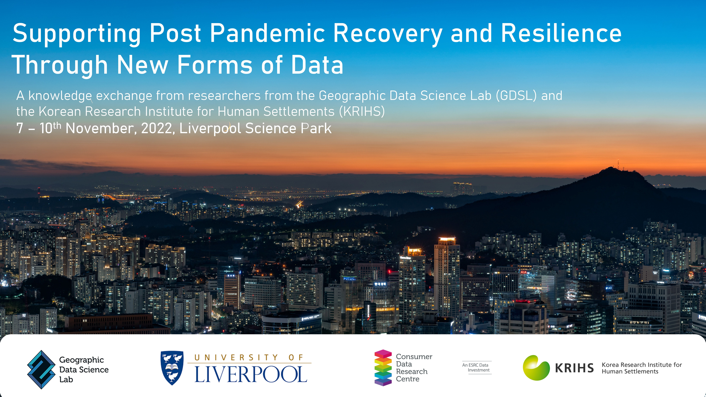
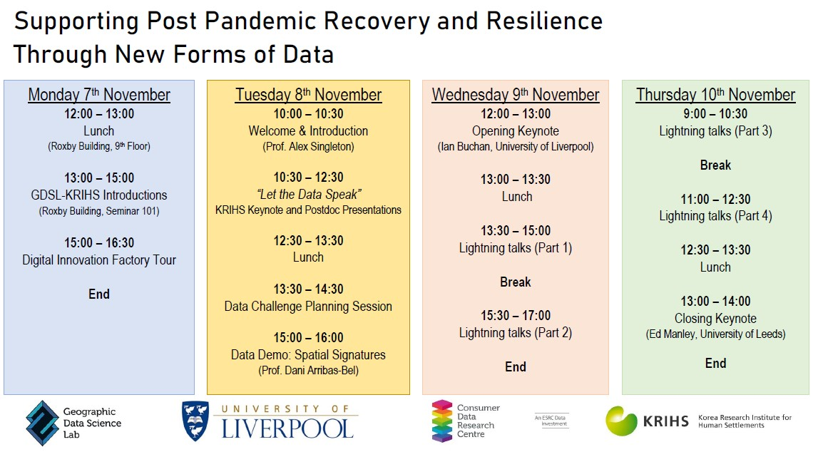
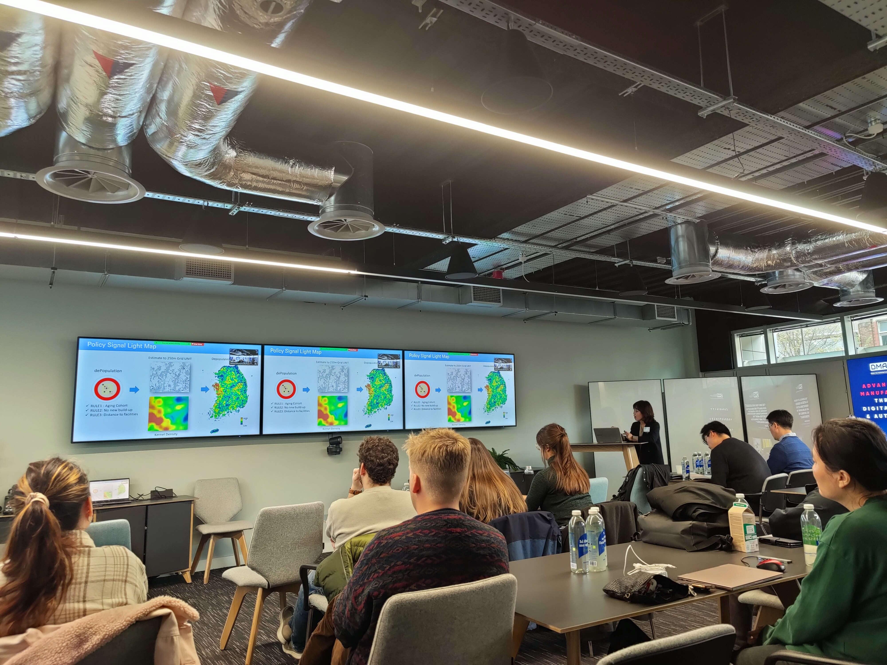
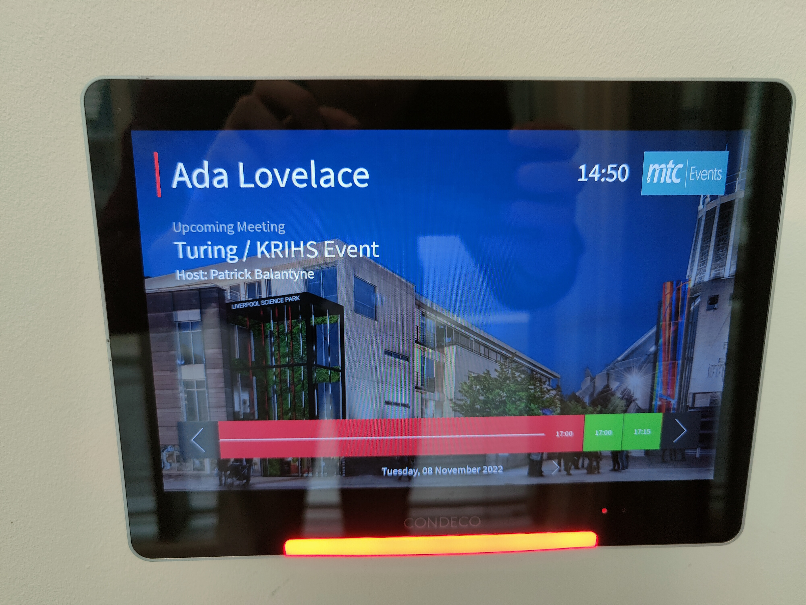
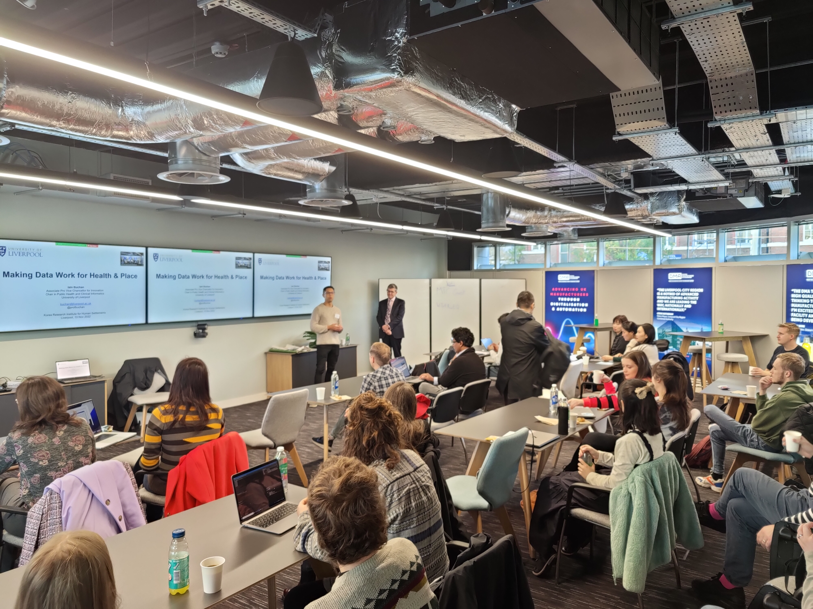

UK Workshop: Supporting Post Pandemic Recovery and Resilience Through New Forms of Data

Workshop Overview
From the 7th - 10th November, the GDSL hosted five members from GAMC/KRIHS for a workshop entitled: ‘Supporting Post Pandemic Recovery and Resilience Through New Forms of Data’. Held at the Liverpool Science Park, the workshop saw lots of exciting activities, including keynote talks from Prof. Iain Buchan and Prof. Ed Manley, a tour of the Digital Innovation Factory, lightning talks from workshop participants and a Data Challenge planning session.
A full overview of the week’s activities can be seen below:

To download a copy of the full itinerary from the UK Workshop, please click this link.
Keynotes
We had a number of exciting keynote talks throughout the week, from colleagues at GAMC/KRIHS, but also here in the UK. The list of keynotes can be found below, and these can be streamed using the links in the ‘Watch the Talks’ section below.
- Eunsum Im, GAMC/KRIHS - “Let the Data Speak”.
- Iain Buchan, Associate Pro Vice Chancellor for Innovation - “Making Data Work for Health and Place”.
- Ed Manley, Professor of Urban Analytics - “Movement Data for Analysing Behaviour during the Pandemic”.
Lightning Talks
Throughout the week, we listened to 20 lightning talks from researchers based both in the GDSL and GAMC/KRIHS. These talks all focused on applications of Geographic Data Science and New Forms of Data to understand the impacts and geography of COVID-19 in a variety of international settings. A full list of the talks can be seen below:
- Alex Singleton, GDSL - The Value of Consumer Data in UK COVID-19 Response.
- Cammy Acosta, GDSL – SARS-CoV-2 VarIaints, Mobility and Air Pollution in the UK.
- Carmen Cabrera-Arnau, GDSL – Understanding Internal Migration in the UK before and during the COVID-19 pandemic using Twitter data (on behalf of Yikang Wang, PhD Student).
- Danial Owen, GDSL – COVID-19 and Sensor Data.
- Eunsun Im, GAMC/KRIHS - A Proposal for Korea-UK Cooperative Research: Geospatial Data-Driven Analyses for Coping with Complex Crisis.
- Francisco Rowe, GDSL – Human Mobility and Migration during COVID-19.
- Gladys Kenyon, GDSL - The value of local urban amenities in house prices during COVID-19.
- Jae Soen Son, GAMC/KRIHS - Supporting Infectious Disease Prevention Policy through Spatiotemporal Simulation Model.
- Mark Green, GDSL - Improving the geographical targeting of SARS-CoV-2 testing in Liverpool using Location-Allocation models.
- May Chen, GDSL – Characterising COVID-19 Morbidity Dynamic Pattern across Neighbourhoods in New York City.
- Myung-Hwa Hwang, GAMC/KRIHS – Current Status and Improvement Directions of COVID-19 Outbreak Monitoring: Based on an Analysis of New Cases by Eup-Myeon-Dong in 2020 and 2021.
- Natalie Rose, GDSL – Essential Retailing Consumption Behaviours During the COVID-19 Pandemic: The Added Value of Spatial Data.
- Niall Newsham, GDSL - Understanding Patterns of Internal Migration During the COVID-19 Pandemic in Spain.
- Olivia Horsefield, GDSL – Exploring Spatio-Temporal Patterns in Violent Crime in England during the COVID-19 Pandemic.
- Patrick Ballantyne, GDSL – Recent trajectories of retail centre recovery and the utility of mobility data.
- Pillsung Byun, GAMC/KRIHS - KRIHS Geospatial Analytics and Monitoring Centre (GAMC), an Introduction.
- Ron Mahabir, GDSL - Can Twitter be used to understand vaccine hesitancy?
- Ruth Neville, GDSL - Understanding the Impact of COVID-19 and Brexit on Inflows of International Student into UK Universities.
- Yohan Chang, GAMC/KRIHS – Pure-inTention: A Study on Deep Learning-based Purpose-driven Trip Demand Estimation Model for Post-Pandemic Countermeasures.
Watch the Talks
You can watch all of the weeks activities on our GDSL YouTube channel.
Day 1
Click image below to view content
- 00:00:00 - Welcome and Introduction (Alex Singleton, GDSL)
- 00:20:35 - “Let the Data Speak” Keynote Presentation (Eunsun Im, KRIHS)
- 01:21:00 - “Let the Data Speak” Research Presentations
- 01:22:00 - Groundswell: Transforming Our Cities From The Ground Up (Mark Green, GDSL)
- 01:40:00 - New Data Sources for Measuring Social and Spatial Residential Mobility in the UK (May Chen, CDRC/GDSL)
- 01:54:00 - Neighbourhood Dynamics and Gentrification (Jennie Gray, CDRC/GDSL)
- 02:11:00 - Mapping the Geographies of Financial Precarity in England and Wales (Zi Ye, CDRC/GDSL)
Day 2
Click image below to view content
- 00:00:00 - “Making Data Work For Health And Place: Opening Keynote (Iain Buchan, University of Liverpool).
- 01:12:00 - Lightning Talks Part 1 (Pillsung Byun, Francisco Rowe, Danial Owen, Yohan Chang, Natalie Rose).
- 02:41:00 - Lightning Talks Part 2 (Mark Green, Myung-Hwa Hwang, Cammy Acosta, Carmen Cabrera-Arnau, Olivia Horsefield).
Day 3
Click image below to view content
- 00:00:00 - Lightning Talks Part 3 (Alex Singleton, Ruth Neville, Jae Soen Son, Ron Mahabir).
- 01:21:08 - Lightning Talks Part 4 (Niall Newsham, Gladys Kenyon, Eunsun Im, Patrick Ballantyne).
- 02:47:00 - Closing Keynote (Ed Manley, University of Leeds).
Photos
Here is a selection of photos from across the weeks activities:


